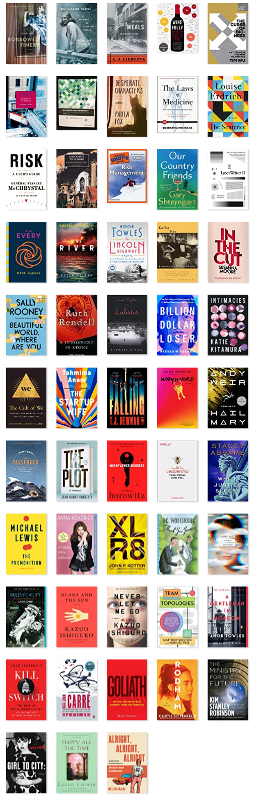

Thanks to Goodreads, I know what books I completed in the past year. I also participated in the Goodreads "reading challenge" where you promise to read some number of books. I promised 53, and managed to complete 53. This is more than I typically finish: I think the pandemic had something to do with it. Also, strangely, I had to fly quite a lot this year, despite the pandemic, and that provided a lot of time for getting to the final pages.
Looking over the year, among the fiction I most enjoyed and would recommend are: 
I also see some highly-rated (by me) novels that I cannot really recommend; while they hit the mark for me, I don't think others would really dig 'em. Also, I see where my ratings were a bit off. For instance, I see I gave Amor Towles's Rules of Civility 5 stars but gave his A Gentleman in Moscow only 4. I read Gentleman first and thought its structure was a little haphazard, which is why I downgraded it. But in reflection, I think it was the better novel, so I'm going to have to subtract a star from Rules.
In non-fiction, my highest rated are
This seems to be the first time in many years when I didn't have a highly-rated tech book. Another oddity is that I only read one rock book, Amy Rigby's Girl to City (excellent). I suppose some people read more music books when they can't see music as much (as under the pandemic) but I think my desire to read more rock books is piqued by the live music experience. On the other hand, I read 7 books I'd classify as memoir/autobiography; this year, they were all memoir (as opposed to full-on autobiography). I gave two of them 5 stars, both by the same author: Paula Fox's Borrowed Finery, and her The Coldest Winter. Some surprises in memoir: I gave Anna Kendrick's Scrappy Little Nobody a 4 (better than I would have expected) and Elizabeth Hardwick's celebrated Sleepless Nights a 3 (it was kind of boring and I didn't see the rationiale for its artiness).
I've been doing the Challenge since 2016, and here's how things stack up over the years:
| Year | Challenge | Books Read | Pages | Length (Avg) | Rating (Avg) |
|---|---|---|---|---|---|
| 2016 | 28 | 30 | 8,281 | 276 | 4.1 |
| 2017 | 26 | 34 | 10,166 | 299 | 3.9 |
| 2018 | 31 | 39 | 13,692 | 351 | 3.9 |
| 2019 | 53 | 47 | 13,798 | 293 | 4.0 |
| 2020 | 53 | 27 | 9,546 | 353 | 3.9 |
| 2021 | 53 | 53 | 14,631 | 275 | 3.9 |
The "Challenge" column is the number I strived to read, and "Books" is the actual total. In 2019 I started challenging myself to read 53 books/year but it was only this year that I managed to satify that expectation. I will admit that I read some shorter books (hence, the smallest average number of pages since 2016.) You might notice that dip in reading in 2020: My ability to focus was disrupted by politics and the 2020 Presidential election. Besides being completely distracted, I was not the healthiest: I must have gained 15 pounds that I still haven't gotten rid of. And lest I forget, I had a spell of afib in February, 2020, that lasted until June: That really messed up my reading time. On the other hand, while I read fewer pages in 2020, each book was longer. I suppose looking over this summary, my "natural" year of reading is about 40 books of about 325 pages each, for some 13,000 pages. As I note, I read a lot of shorter books this year to hit my number (53); so I think that number may be a bit inflated and I should allow myself to read longer works (on average). So for 2022, I think I'll challenge myself to 45. I look at the reading tallies of some of my friends (Ellie: 62 books / 369 pp. average; Kelly: 105/337) and don't know how they do it.
Some might think that my average rating of about 3.9 is too high; but I am pretty choosy about what I read, so I'll stand by that average number. Here's how I grade. 5 is the highest and 1 is the lowest: